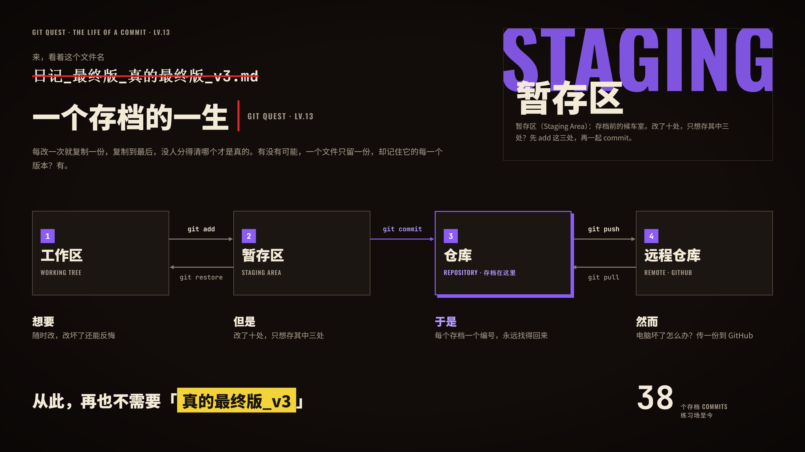

Git Quest · 练习场 · Lv.14 / 17
来，看着这个文件名
日记_最终版_真的最终版_v3.md
每改一次就复制一份，复制到最后，没人分得清哪个才是真的。有没有可能，一个文件只留一份，却记住它的每一个版本？有。
Git 闯关练习场
Git Quest · Lv.14一个 Git 新手和 Claude 一起，一关一关学 Git 和 GitHub 的闯关记录。你正在看的这个网页，就是第 14 关的作业：它由 GitHub Pages 发布，每次推送后由 GitHub Actions 自动更新。
进度 Progress
14 / 17
已通关 14 关（第 0 到第 13 关），正在第 14 关：发布网站
- 00开荒
- 01第一次存档
- 02翻看历史
- 03后悔药
- 04上传
- 05双向同步
- 06README 与 Artifact
- 07平行世界
- 08Worktree
- 09冲突
- 10Pull Request
- 11两种 Fork
- 12Issue
- 13Claude Design
- 14发布网站
- 15定制你的 Claude
- 16毕业项目
一个存档的一生 The Life of a Commit
暂存区
暂存区（Staging Area）：存档前的候车室。改了十处，只想存其中三处？先 add 这三处，再一起 commit。
1
工作区
Working Tree想要 随时改，改坏了还能反悔
git add 文件名
2
暂存区
Staging Area但是 改了十处，只想存其中三处
git commit -m "说明"
3
仓库
Repository · 存档在这里于是 每个存档一个编号，永远找得回来
git push
4
远程仓库
Remote · GitHub然而 电脑坏了怎么办？传一份到 GitHub
git pull

练习场里的硬数字 By the Numbers · 截至 2026 年 11 月 27 日
Commits
40
个存档。打开 git log，每一个都还在
Pull Requests
2
个 PR 已合并：命令速查表，修好 README
Issues
2 / 3
个 Issue 被 fixes 自动关闭，剩下一个是灵感池
结尾 Ending
从此，再也不需要「真的最终版_v3」
ByMYSine · 和 Claude 一起完成 · 设计：回形针 PaperClip 设计系统